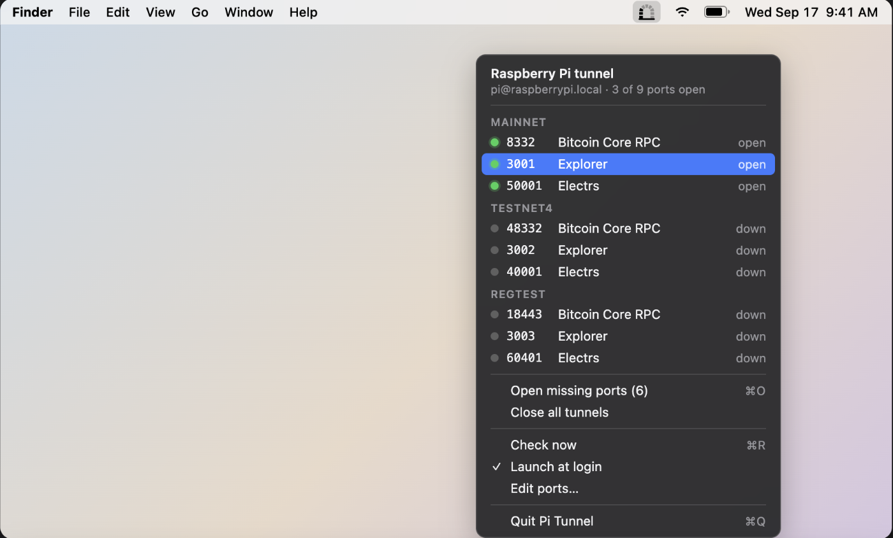
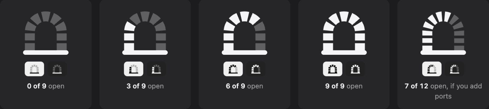

A macOS menu bar app that shows the state of an SSH port-forwarding tunnel to a Raspberry Pi, one brick per port.


Choose Edit Ports… from the menu. The window shows the SSH host, how often to check, and a table of every port with its group, number, service name and an optional URL. Click a cell to change it, add or remove rows, then Save; the menu and the icon update immediately.
Ports in the same group are listed together in the menu. A row with a URL opens it in your browser when clicked; other rows copy 127.0.0.1:<port> to the clipboard. Prefer a text editor? The window has a button that opens the underlying ~/.config/pi-tunnel/ports.json.